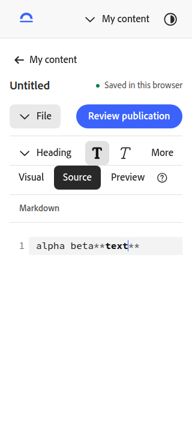
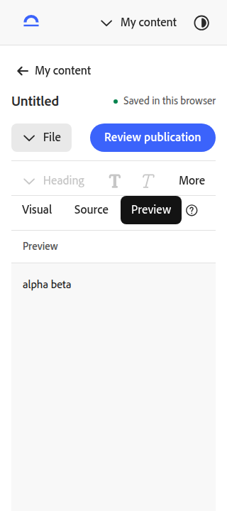
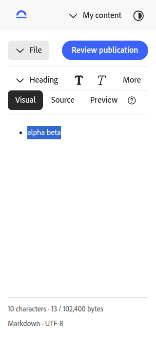
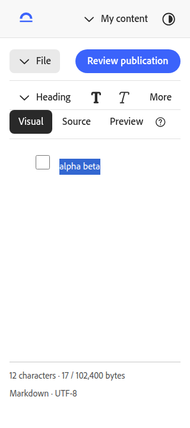
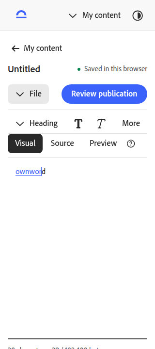
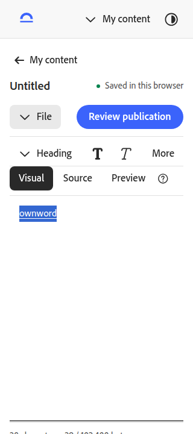
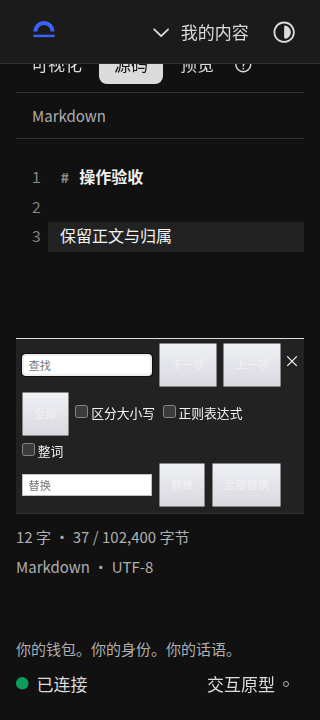
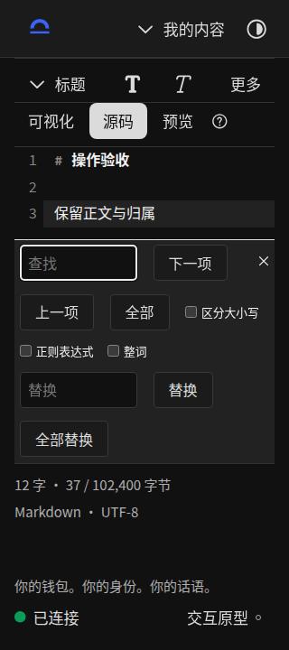
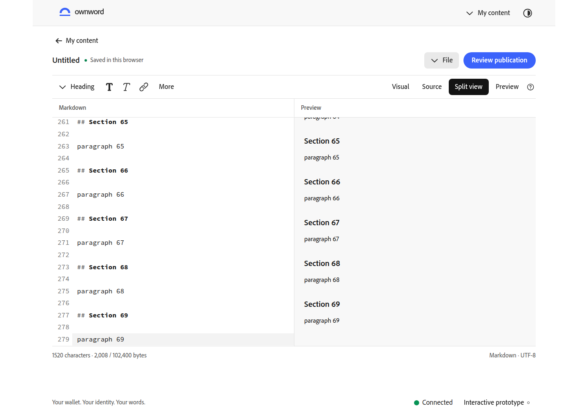

内容编辑器 · 逐动作修复对照
六组截图均来自同一基准提交 f3f6844 与当前实现，保持同一正文、模式、主题和视口。手机 320 × 720；双栏桌面 1440 × 1000。
打开交互原型 · 查看逐动作验收清单 · 上一轮：中文字体 · 待视觉复核
手机工具栏
滚动正文时工具栏保持可见，避开固定页头。

预览只读
格式按钮禁用，避免预览时写入额外占位内容。


全选任务列表
选中文本后生成任务复选框；多段文字分别成为列表项。


链接文字边界
修改链接文字后完整覆盖文字，末字符不再落在链接之外。


深色查找
输入、按钮和文字使用 S2 颜色，查找面板换行有序。


双栏阅读位置
进入双栏保留阅读位置，支持键盘与容器滚动联动。
